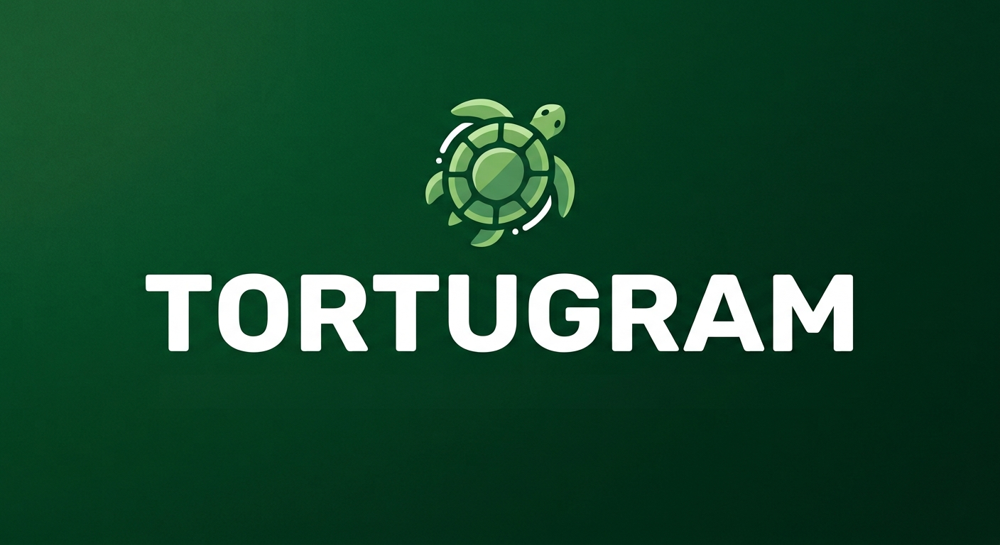

Open-source Android client powered by the Telegram API. Browse and play videos, images, GIFs and music directly from your chats, channels, groups and folders — with remote-control navigation built in.
A smooth multimedia experience, designed from the ground up for Amazon Fire TV Stick.
Play videos, images and GIFs, and listen to your music right inside the app.
Easily browse your channels, groups, chats and custom chat folders.
Interface designed exclusively for remote control and big screens.
Enjoy your content directly, without waiting for full downloads.
Smart cache system for fast, stable performance.
Free, transparent project, open to community contributions.
Tortugram has no servers of its own, no ads and no tracking. Read exactly how it handles your information, and how to delete it.
Download the APK and install it on your Amazon Fire TV Stick in under a minute.
⬇ Download Tortugram